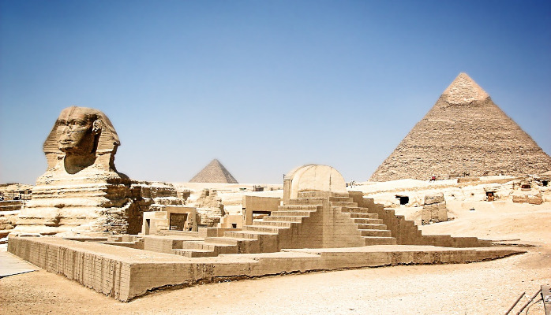

World War One: A war to end all wars...
World War I, also known as the Great War, was a global conflict that took place from 1914 to 1918. It involved many countries around the world and had a significant impact on history. Let's embark on a journey to discover some fun facts, explore the timeline of events, and meet important historical figures from this fascinating period.
World War I was a time of great challenges and sacrifices. It introduced new technologies and strategies and shaped the world we live in today. By learning about this important chapter in history, we can better understand the value of peace and the importance of working together to solve conflicts.
Timeline:
1914: The war begins with the assassination of Archduke Franz Ferdinand of Austria-Hungary.
1915:The sinking of the RMS Lusitania, a passenger ship, by a German submarine brings the war closer to the United States.
1917: The United States enters the war after Germany sinks several American ships.
1918: The Armistice peace treaty is signed on November 11, ending the war.
Fun Facts:
Trench Warfare: Soldiers dug long trenches to protect themselves. These trenches stretched for miles and were sometimes filled with mud and rats!
Secret Codes: Both sides used secret codes to send messages. It was like solving puzzles, and codebreakers played a vital role in decoding enemy plans.
Pigeon Post: Carrier pigeons were used to send messages across enemy lines. These brave birds flew through the danger zone to deliver important information.
They built impressive structures like the Great Pyramid of Giza, one of the Seven Wonders of the Ancient World.
Christmas Truce: In 1914, on Christmas Day, soldiers from both sides laid down their weapons and celebrated together in the trenches. They even played soccer!
Important Historical Figures:
Woodrow Wilson: The President of the United States during World War I, he worked to keep America out of the war initially but eventually led the country into it.
Gavrilo Princip:The assassin who shot Archduke Franz Ferdinand, sparking the war.
Kaiser Wilhelm II:The German emperor during the war, he played a significant role in leading his country.
RSergeant Alvin C. York: A famous American soldier who became a hero after capturing 132 German soldiers.